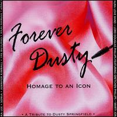

Various Artists • R&D (Ladyslipper) • Apr 2000
An album that pays tribute to a gifted songwriter is understandable, but an homage to a singer who didn't write her songs can be a tad dubious. Nevertheless, the women who contribute performances to Forever Dusty are connected to Dusty
Springfield by way of the material they interpret and their place in the world as female artists struggling to be heard. Individually, a number of the offerings are really great. But be sure, some of them play it safe, not straying too far
from Springfield's handling. That, necessarily, gives the overall disc a dated sound, which was perhaps the intention. It didn't need to be, as many of these gals are wonderful singers in their own rights capable of rendering a good song all
on their own without having to channel another's spirit. For instance, Jill Sobule somehow manages to sound absolutely timeless on "Just a Little Lovin'," as does Zrazy on "How Can I Be Sure." And a shimmering Jennifer Kimball feels right at
home in "Chained to a Memory." Stepping into a reggae groove, Vicki Randle puts a spin on "Wishin' and Hopin'." Then there are the Butchies, because every good independent women's release should have a representative from the riot grrl
scene. They rock their way through "What's It Gonna Be," while the Indigo Girls come off as positively flowery, pardon the phrase, on "Broken Blossoms." With 17 tracks, a couple of them have to be filler, simply by virtue of the laws of
musical mathematics. They are, nonetheless, honest and heartfelt attempts to honor Springfield. As sales proceeds go to fight breast cancer, it's hard to know what attracted these artists to the project more -- a great cause or a great
singer. No matter its original intent, Forever Dusty is a nice tribute to the collective power of strong women in music and a fine reminder of Springfield's contribution to that tradition. - Kelly McCartney, All Music Guide
Buy album